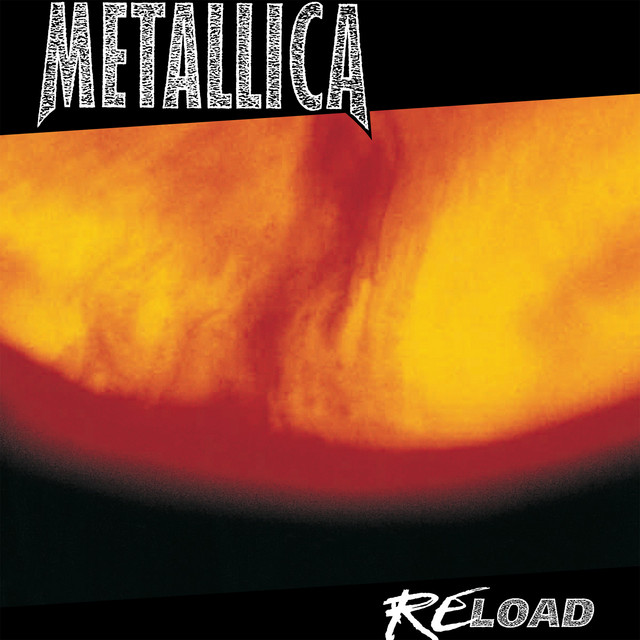

Metallica

Информация
• Дата образования: 28 октября 1981 года
• Участники:
• Джеймс Хэтфилд (1981 - наст. время)
• Ларс Ульрих (1981 - наст. время)
• Рон МакГовни (1981 - 1982)
• Дэйв Мастейн (1981 - 1983)
• Кирк Хэммет (1983 - наст. время)
• Клифф Бёртон (1983 - 1986)
• Джейсон Ньюстед (1986 - 2001)
• Роберт Трухильо (2003 - наст. время)
Навигация

Track 1
Artist 1
Начало группы, Kill 'em All и Ride the Lightning
Metallica была основана в Лос-Анджелесе 28 октября 1981 года гитаристом и вокалистом Джеймсом Хетфилдом и барабанщиком Ларсом Ульрихом. Название было придумано их знакомым Роном Куинтаной, который изначально придумывал название для своего журнала, и просил Ульриха выбрать одно из предложенных. Ларс умело сообразил, и взял себе невыбранное название "Metallica". Дуэт пригласил басиста Рона Макговни, знакомого Хетфилда по его предыдущей группе «Leather Charm» Отчаявшись в поисках постоянного лид-гитариста, Ульрих поместил объявление в журнале «The Recycler». Дэйв Мастейн из Ханингтон Бич, который в то время уже играл в группе Panic, ответил и встретился с участниками Metallica для прослушивания. Ульрих и Хетфилд были так впечатлены оборудованием и одной лишь разминкой Мастейна, что его приняли в группу ещё до начала самого прослушивания. После того как Metallica увидела, как играет группа Trauma, коллектив попросил басиста Клиффа Бёртона присоединиться к ним, заменив тем самым менее профессионального Макговни. Бёртон согласился, но с условием, что группа переедет в его родной город Сан-Франциско. Группа с радостью приняла это предложение. В 1983 году в Нью-Йорке был записан их дебютный альбом Kill 'em All. Альбом считается новаторской записью в жанре трэш-метал, благодаря своему звучанию, которое является комбинацией британского хэви-метала и американского хардкора. Материал пластинки существенно отличался от мейнстримовой рок-музыки начала 1980-х годов, впоследствии превратив лонгплей в источник вдохновения для будущих исполнителей жанра. Первоначально альбом не получил существенного внимания со стороны музыкальной прессы и был популярен преимущественно в андеграундной среде.
Ride the Lightning - второй студийный альбом трэш-метал группы Metallica,
вышедший 27 июля 1984 года на лейбле Megaforce Records и переизданный лейблом
Elektra Records 16 ноября 1984 года. На обложке изображён электрический стул,  окружённый разрядами молний, исходящими из логотипа группы.
Название было заимствованно из романа Стивена Кинга «Противостояние»; выражение
«оседлать молнию» означает «быть казнённым на электрическом стуле».
Хотя в плане звучания альбом опирался на традиции трэш-метала, он также
продемонстрировал творческий рост группы и разнообразие музыкального материала.
Частично этому способствовал опыт бас-гитариста Клиффа Бёртона, который имел
классическое музыкальное образование и в этот раз принимал большее участие
в написании песен. При этом музыканты делали основной упор не только на скорость
мелодий, как это было на их дебютном диске Kill 'Em All;
группа стремилась
окружённый разрядами молний, исходящими из логотипа группы.
Название было заимствованно из романа Стивена Кинга «Противостояние»; выражение
«оседлать молнию» означает «быть казнённым на электрическом стуле».
Хотя в плане звучания альбом опирался на традиции трэш-метала, он также
продемонстрировал творческий рост группы и разнообразие музыкального материала.
Частично этому способствовал опыт бас-гитариста Клиффа Бёртона, который имел
классическое музыкальное образование и в этот раз принимал большее участие
в написании песен. При этом музыканты делали основной упор не только на скорость
мелодий, как это было на их дебютном диске Kill 'Em All;
группа стремилась
развить звучание, добавляя акустические гитары,
глубокие инструментальные пассажи и более сложные музыкальные гармонии.
Ride the Lightning получил положительные отзывы музыкальной прессы; критики расценивали
его как более амбициозный проект в сравнении с предшественником.
Master of Puppets
Третий студийный альбом Metallica, выпущенный 3 марта 1986 года на лейбле Elektra Records, Работа над пластинкой которого проходила в Копенгагене в студии Sweet Silence Studios под руководством продюсера Флемминга Расмуссена. Лонгплей добрался до 29-го места в чарте Billboard и стал первым альбомом в жанре трэш-метал, который был отмечен «платиновым» сертификатом. В общей сложности продажи альбома в США составляют более 6 миллионов экземпляров.

Master of Puppets был высоко оценён критиками и включается во многие рейтинги
лучших записей всех времён. Ряд публицистов особо отмечал такие компоненты
пластинки, как музыкальный драйв, виртуозность исполнения и глубина
политизированных текстов. Лонгплей считается краеугольной работой группы в
1980-х и одним из самых влиятельных альбомов хеви-метала. Критики называют
его выход одной из причин общего роста интереса публики к этому направлению.
Клифф Бёртон
Кли́ффорд Ли (Клифф) Бёртон (англ. Clifford Lee Burton, Cliff Burton; 10 февраля 1962 — 27 сентября 1986) — американский музыкант-виртуоз, второй бас-гитарист метал-группы Metallica. Высокий уровень техники, необычная манера игры, разнообразие музыкальных вкусов, композиторские навыки и неожиданная трагическая смерть сделали его культовым музыкантом, и оказали влияние на весь жанр хэви-метала. В 2011 году признан одним из лучших бас-гитаристов всех времен согласно опросу, проведенному журналом Rolling Stone. Члены группы Metallica искали замену басисту Рону Макговни, который отказался от продолжения музыкальной деятельности в группе. В соответствии с информацией к альбому Garage Inc., Джеймс Хетфилд и Ларс Ульрих посетили концерт группы Trauma (в которой тогда играл Бёртон) и услышали потрясшее их тогда гитарное соло. Заметив, что соло (это было знаменитое (Anesthesia) Pulling Teeth) играет не гитарист, а басист, остальные члены Metallica решили, что Клифф им идеально подходит. После концерта Джеймс и Ларс подошли к нему и сказали, что слышали его соло и хотят, чтобы он стал их бас-гитаристом. Клифф долго не соглашался, так как не хотел переезжать в Лос-Анджелес, но потом всё-таки согласился, однако с условием того, что Metallica переедет из Лос-Анджелеса к нему в Сан-Франциско. Он считал, что музыкальная сцена Лос-Анджелеса не совсем естественная и нормальная, в частности потому, что Лос-Анджелес был центром столь недолюбливаемого Бёртоном глэм-метала. Первое выступление Бёртона в составе Metallica произошло 5 марта 1983 года в клубе «The Stone» в Сан-Франциско. Чуть позже, уже во время записи Ride The Lightning, Клифф начал обучать товарищей музыкальной теории. Показывал, как совмещать тяжёлый метал с мелодикой и знакомил с творчеством других исполнителей, таких как Yes, R.E.M., Кейт Буш и горячо любимых им Misfits. Клифф очень часто таскал маленькую акустическую гитару, на которой наигрывал гармонии. Именно таким образом появилось интро к «Fight Fire With Fire», которое было вдохновлено Minuet In G and G Minor Баха. Вообще, почти все песни (за исключением Trapped Under Ice и Escape) в альбоме также авторства Клиффа. Именно на Ride The Lightning больше всего проявилось его мастерство басиста и композитора. Самыми значимыми его работами на этом альбоме можно по праву назвать «For Whom The Bell Tolls», которая начинается с его искажённого басового риффа, и «The Call of Ktulu».
Во время европейского тура в поддержку нового альбома Master of
Puppets музыканты
были вынуждены спать в неудобных койках своего гастрольного автобуса. Той роковой
ночью борьба между членами группы за койку поудобнее решилась колодой карт. Кирк
вспоминает, что Клифф вытянул туз пик, посмотрел на него и сказал: «Вот теперь на
этом месте сплю я», на что Хэммет ответил: «Хорошо, хорошо! Место твоё, посплю
где-нибудь ещё, быть может, там будет даже лучше». Около полуночи их автобус
выехал из Стокгольма и направился в Копенгаген. В 7:00 утра водитель не справился
с управлением, и автобус после длинного заноса рухнул с насыпи на бок. Клифф во
время падения автобуса наполовину вывалился из окна и был задавлен автобусом. По
одной версии, он умер мгновенно, а по другой — его придавило автобусом уже после
того, как автобус попытались перевернуть и приподнять, однако трос оборвался и
автобус рухнул, задавив Бёртона. Сам водитель объяснил это катастрофическое событие
тем, что он просто наехал на замёрзшую лужу. Тело Клиффа было кремировано. Во время
этой церемонии играла инструментальная композиция «Orion» из
альбома Master of
Puppets. Затем Metallica никогда больше не исполняла эту композицию вживую
вплоть до концерта в Сан-Франциско 13 ноября 2005 года, где композиция была
сыграна наполовину (полную версию они сыграли лишь 3 июня 2006 года в Нюрнберге,
Германия). Лишь некоторое время в начале 90-х Джейсон
Ньюстед включал часть
этой композиции в свою композицию «Master of Puppets Medley». Также после
смерти Бёртона Metallica больше не исполняла инструментал (Anesthesia) Pulling
Teeth
до юбилейного концерта, посвящённого 30-летию группы, когда его исполнил
Роберт Трухильо.
...And Justice For All
Четвёртый студийный альбом
Metallica, выпущенный 7 сентября 1988 года на лейбле Elektra Records. Это был  первый полноформатный альбом группы, в записи которого участвовал бас-гитарист
Джейсон Ньюстед, сменивший трагически погибшего в 1986 году Клиффа Бёртона.
Музыкальное содержание альбома представляет собой материал с более прогрессивной
структурой, базирующийся на длинных и сложных мелодиях композиций, исполненных
в быстром темпе и содержащих небольшое количество классических куплетных форм,
нежели в двух предыдущих (Ride the Lightning и Master of Puppets). Впоследствии
многие эксперты критиковали «сухое» звучание и «стерильный» продакшн альбома, а
также сетовали на почти полностью заглушенный бас и «странное» звучание ударных.
Лейтмотив альбома объединён единой концептуальной основой, базирующейся на теме
политической и правовой несправедливости, которая формируется благодаря сюжетам
отдельных песен: войне, цензуре и ядерному противостоянию.
первый полноформатный альбом группы, в записи которого участвовал бас-гитарист
Джейсон Ньюстед, сменивший трагически погибшего в 1986 году Клиффа Бёртона.
Музыкальное содержание альбома представляет собой материал с более прогрессивной
структурой, базирующийся на длинных и сложных мелодиях композиций, исполненных
в быстром темпе и содержащих небольшое количество классических куплетных форм,
нежели в двух предыдущих (Ride the Lightning и Master of Puppets). Впоследствии
многие эксперты критиковали «сухое» звучание и «стерильный» продакшн альбома, а
также сетовали на почти полностью заглушенный бас и «странное» звучание ударных.
Лейтмотив альбома объединён единой концептуальной основой, базирующейся на теме
политической и правовой несправедливости, которая формируется благодаря сюжетам
отдельных песен: войне, цензуре и ядерному противостоянию.
В песнях …And Justice for All участники коллектива критиковали политическую
систему США за её лицемерие, ложь и двуличность. Название пластинки - цитата из клятвы
верности американскому флагу, оно размещено в нижней части обложки и стилизованно
под граффити. В поддержку альбома было выпущено три сингла: «Harvester of
Sorrow»,
«Eye of the
Beholder» и «One»; заглавный трек был издан в формате промосингла.
Альбом получил высокие оценки со стороны музыкальных
критиков. Впоследствии
он был включён в число лучших записей года специализированного опроса
«Pazz & Jop», а сингл «One» стал лауреатом премии «Грэмми» в категории
«Лучшее метал-исполнение», которая была первой статусной наградой для
музыкантов Metallica.
Metallica (aka. The Black Album)
Metallica — пятый студийный  альбом одноимённой группы,
выпущенный 12 августа 1991 года, также известный как The Black Album
(с англ. - «Чёрный альбом»). Первый альбом группы, записанный с продюсером
Бобом Роком (впоследствии его называли «человеком, принёсшим колоссальный
успех группе Metallica»), который пришёл на смену Флеммингу Расмуссену,
занимавшемуся созданием трёх предыдущих дисков коллектива. Рок, до этого
продюсировавший такие глэм-металлические команды, как Bon Jovi и Mötley
Crüe, подталкивал группу к музыкальным экспериментам, за счёт чего
звучание Metallica разительно отличалось от четырёх предыдущих альбомов —
песни стали медленнее и короче. Как отмечали эксперты, группа
«сильно упростила свой звук» (намекая, что это был уже не метал), что вызвало
острую полемику как в музыкальном сообществе, так и среди фанатов
коллектива. Многие начали обвинять группу в продажности.
альбом одноимённой группы,
выпущенный 12 августа 1991 года, также известный как The Black Album
(с англ. - «Чёрный альбом»). Первый альбом группы, записанный с продюсером
Бобом Роком (впоследствии его называли «человеком, принёсшим колоссальный
успех группе Metallica»), который пришёл на смену Флеммингу Расмуссену,
занимавшемуся созданием трёх предыдущих дисков коллектива. Рок, до этого
продюсировавший такие глэм-металлические команды, как Bon Jovi и Mötley
Crüe, подталкивал группу к музыкальным экспериментам, за счёт чего
звучание Metallica разительно отличалось от четырёх предыдущих альбомов —
песни стали медленнее и короче. Как отмечали эксперты, группа
«сильно упростила свой звук» (намекая, что это был уже не метал), что вызвало
острую полемику как в музыкальном сообществе, так и среди фанатов
коллектива. Многие начали обвинять группу в продажности.
Альбом дебютировал на верхней строчке американского чарта Billboard 200 с 598 000 проданными копиями за первую неделю, в общей сложности отметившись в Топ-10 чартов ещё около 15 стран, включая первые места в хит-парадах Великобритании, Германии, Франции и Австралии. Всего продано около 31 миллиона копий Metallica по всему миру, что делает его самым продаваемым альбомом в дискографии коллектива и одним из самых продаваемых в истории метала. По данным организации Nielsen SoundScan, диск фигурировал в чарте Billboard на протяжении 560 недель — он занимает 4-е место по этому показателю, больший результат продемонстрировали лишь The Dark Side of the Moon Pink Floyd, Legend Боба Марли и Greatest Hits Journey. В 2009 году Metallica был признан самым продаваемым альбомом за всё время мониторинга системы SoundScan. В его поддержку было выпущено пять синглов: «Enter Sandman», «The Unforgiven», «Nothing Else Matters», «Wherever I May Roam» и «Sad but True», каждый из которых отметился в чарте Billboard Hot 100. Особенно успешной была песня «Enter Sandman», попавшая в Top-20 и получившая широкую ротацию на MTV
О сингле «Enter Sandman» Ульрих говорил следующее: «Это наипростейшая песня из всех, что мы когда-либо писали. Если внимательно послушать, то окажется, что там всего один рифф. То есть вся песня построена вокруг одного риффа, что для песни Metallica просто невероятно!». Сингл «Enter Sandman» стал золотым: на территории США было приобретено более 500 000 копий. Критики отнеслись к песне благосклонно, и, начиная с 1991 года, она входит во все концертные альбомы группы и исполняется на церемониях награждения и прочих важных мероприятиях. Критики хорошо приняли «Enter Sandman». Обозреватель AllMusic Крис Тру назвал её «лучшим моментом группы» а также сказал, что это «взрывной метал стадионного уровня, энергетика которого захватывает со вступления до самого конца». Стив Хюи в своём обзоре на AllMusic называет «Enter Sandman» одной из лучших песен альбома Metallica. Журналист из Rolling Stone Роберт Палмер назвал песню первой колыбельной в стиле метал . Стив Сид с Би-би-си охарактеризовал «Enter Sandman» как драматичную и отметил, что новые мотивы показали изменения в звучании группы. Тим Гриерсон из журнала Blender сказал, что текст песни воссоединяет обычаи, связанные со сном ребёнка с кошмарными образами и похвалил главный рифф.
«The Unforgiven» была полностью выстроена вокруг вокальной линии. По настоянию Рока, Хэтфилд впервые использовал более мягкий и глубокий вокал; согласно плану продюсера, музыканты должны были отнестись к его голосу как к инструменту. По мнению Ингэма, «песня свидетельствует, что Metallica стала сложным и зрелым коллективом — от гитарного „рубилова“ как символа повседневной рутины до строчек, выражающих крушение надежд». Сам Хэтфилд так отзывался о композиции: «The Unforgiven — о парне, который никогда не пользовался никакими преимуществами, пропускал все шансы». «Она о том, что многие люди просто проживают свою жизнь, не проявляя никакой инициативы. Многие просто следуют по следам других» — добавлял Ульрих.
Центральная баллада альбома, «Nothing Else Matters», представляет собой медленную
песню с яркими акустическими переборами. В этой композиции музыканты
впервые обратились к оркестровой аранжировке (за которую отвечал дирижёр Майкл
Кэймен), также добавив вокальные гармонии и игру на открытых струнах во
вступлении. По словам Хэтфилда, группа хотела написать нетипичную для
Metallica балладу: «Мы хотели сделать более вокальную песню. Мне кажется струнные
в ней мегакрутые». Гитарист признавался, что во время написания слов к
песне, когда группа была с гастролями в Канаде, он находился в душевном смятении
и был очень уязвим («я написал её в одиночестве»). Музыкант очень скучал по своей
подруге и посвятил песню ей; начало песни —
переборы на открытых 1, 2, 3 и 6 струнах — он сочинил разговаривая
с ней по телефону, из-за чего мог играть на гитаре
только одной рукой.
Впоследствии рецензент портала AllMusic Крис Тру заявил, что «самым захватывающим
моментом является то, что Metallica выпустила медленную песню, которая не была
посвящена смерти или печали, одиночеству или самоубийству. Это песня о том, как
найти своё истинное призвание и придерживаться его».
Load и ReLoad
Шестой студийный альбом Metallica, выход которого состоялся в июне 1996 года на лейбле Elektra Records в Соединенных Штатах и на Vertigo Records международно. Выход альбома Load ознаменовал собой отход от стиля трэш-метал в сторону хард-рока, что сильно разочаровало некоторых поклонников группы. Альбом записан в стиле таких жанров, как южный рок, блюз-рок, кантри-рок и альтернативный рок. Ларс Ульрих сказал более подробно о характере звучания Load: «Этот альбом и то, что мы с ним делаем, — вот, на мой взгляд, в чём суть Metallica: осваивать разные вещи. И если ты перестанешь осваивать что-то новое, сиди на одном месте и жди, когда сдохнешь». С длительностью почти в 79 минут Load является самым длительным альбомом в дискографии Metallica. Load получил неоднозначные отзывы от критиков, но имел коммерческий успех, дебютировав на первом месте американского чарта Billboard 200. За первую неделю было продано 680 000 копий, что сделало альбом самым успешным дебютом 1996 года.
ReLoad - седьмой студийный альбом Metallica, вышедший в 1997 году. Последний студийный альбом с басистом Джейсоном Ньюстедом. По утверждению самих членов группы, ReLoad вовсе не новый альбом, а всего лишь вторая часть выпущенного годом ранее альбома Load. Все песни для обоих альбомов (за исключением песни «The Unforgiven II») были написаны в одно и то же время — с конца 1994 до первой половины 1995 гг. Первоначально группа планировала выпустить эти песни двойным альбомом, но по разным причинам от этой идеи пришлось отказаться. Однако несмотря на это, по мнению многих поклонников группы, «ReLoad» получился более экспериментальным и разнообразным.
The Unforgiven II -
четвёртая песня и второй сингл с седьмого
студийного альбома Metallica ReLoad, вышедшего в
1997 году. Это единственная песня, которая появилась
именно во время записи Reload.
«The Unforgiven II» является сиквелом песни «The Unforgiven»,
которая представлена в альбоме Metallica. Идея написать
продолжение песни из пятого альбома впервые пришла в голову
лидеру Metallica Джеймсу Хэтфилду. Джеймс говорил, что
«The Unforgiven» в своё
время не полностью раскрыла то,
что он хотел сказать, и поэтому давно хотел сделать новую
версию. Аккорды, использованные в припеве «The
Unforgiven»,
играются в куплете сиквела. Музыкальные критики благоприятно
отнеслись к композиции, но среди фанатов она не обрела такой
популярности, как, например, её приквел.
Garage Inc.
Garage Inc. - альбом , вышедший в 1998 году, представляющий собой сборник кавер-версий песен различных групп. В альбоме исполнены песни музыкантов разнообразных жанров, которые так или иначе повлияли на творчество группы, или же имели большое значение для участников. Сюда вошли песни первопроходцев металла, таких как Black Sabbath, Diamond Head, Боба Сигера и Lynyrd Skynyrd. Используя песни с первого альбома датчан Mercyful Fate Melissa (1983), музыканты записали попурри, которое вошло в альбом под названием Mercyful Fate. Каверы на Discharge и Misfits представили хардкор-панк составляющую.
Версии песен в исполнении Metallica стали популярными, иногда более
известными
среди массового слушателя, чем оригиналы.
К августу 2013 года альбом разошёлся по миру
тиражом более 6 миллионов копий.
St. Anger
 восьмой студийный альбом группы Metallica - St. Anger, выпущенный 5 июня
2003 года. Последний релиз группы, выпущенный на лейблах Elektra и Vertigo Records.
Также последний релиз, который продюсировал Боб Рок, чья работа с Metallica
начиналась с пятого одноимённого студийного альбома. Запись альбома началась
23 апреля 2001 года, но вскоре была отложена по причине курса реабилитации
Хэтфилда в связи с «алкоголизмом и другими вредными привычками» в июле того
же года и в результате группа не приступала к записи до 2002 года.
В конце концов Джеймс вернулся в группу, но работал лишь по четыре часа
в день, остальное время проводил со своей семьёй.
восьмой студийный альбом группы Metallica - St. Anger, выпущенный 5 июня
2003 года. Последний релиз группы, выпущенный на лейблах Elektra и Vertigo Records.
Также последний релиз, который продюсировал Боб Рок, чья работа с Metallica
начиналась с пятого одноимённого студийного альбома. Запись альбома началась
23 апреля 2001 года, но вскоре была отложена по причине курса реабилитации
Хэтфилда в связи с «алкоголизмом и другими вредными привычками» в июле того
же года и в результате группа не приступала к записи до 2002 года.
В конце концов Джеймс вернулся в группу, но работал лишь по четыре часа
в день, остальное время проводил со своей семьёй.
Медленно Metallica
сочиняла и записывала материал для своего нового альбома. Боб Рок
исполнял партии бас-гитары, из-за ухода басиста Ньюстеда из группы.
Death Magnetic
 Death Magnetic - девятый студийный альбом американской группы
Metallica,
вышедший 10 сентября 2008 года в Великобритании, где распространением занималась
компания Vertigo, а 12 сентября прошёл мировой релиз. Альбом вышел на лейбле
Warner Bros. Records. Альбом стал первой полноценной студийной работой нового
бас-гитариста Роберта Трухильо. Продюсером выступил Рик Рубин. Также впервые
Metallica выпустила свой альбом под лейблом Warner Bros. Records, хотя они
все ещё работают с Warner Music Group, которой принадлежит их предыдущий лейбл —
Elektra Records. На пластинку попали 10 композиций из 11 записанных. В 2011
группа выпустила мини-альбом Beyond Magnetic, состоящий из 4 композиций, не
вошедших в основной альбом.
Альбом стал первым в своём роде в истории группы, когда каждый из её членов
участвовал в написании песен или создавал свою. Также именно в Death Magnetic
впервые, после ...And Justice for All, была включена
инструментальная композиция
(Suicide &
Redemption). Кроме того, это первый альбом после «черного», в оформлении
обложки которого Metallica использовала свой прежний логотип (без обрезанных букв
«М» и «А»).
В стремлении воссоздать классическое звучание, Metallica вернулась к настройке
гитар А-440 (нота «ля» на частоте 440 герц), которой пользовалась до 1991 года.
Во время многолетнего тура с «черным» альбомом ради
спасения голоса Хэтфилда
группе пришлось «спуститься» на полтона — и в будущем такая настройка сохранилась.
Теперь же, по велению Рубина, музыкантам пришлось поднапрячься и вернуться к
классическому звучанию, в котором, по мнению продюсера, «и есть настоящая жизнь»
(Однако на концертах группа использует настройку на полтона ниже).
Death Magnetic - девятый студийный альбом американской группы
Metallica,
вышедший 10 сентября 2008 года в Великобритании, где распространением занималась
компания Vertigo, а 12 сентября прошёл мировой релиз. Альбом вышел на лейбле
Warner Bros. Records. Альбом стал первой полноценной студийной работой нового
бас-гитариста Роберта Трухильо. Продюсером выступил Рик Рубин. Также впервые
Metallica выпустила свой альбом под лейблом Warner Bros. Records, хотя они
все ещё работают с Warner Music Group, которой принадлежит их предыдущий лейбл —
Elektra Records. На пластинку попали 10 композиций из 11 записанных. В 2011
группа выпустила мини-альбом Beyond Magnetic, состоящий из 4 композиций, не
вошедших в основной альбом.
Альбом стал первым в своём роде в истории группы, когда каждый из её членов
участвовал в написании песен или создавал свою. Также именно в Death Magnetic
впервые, после ...And Justice for All, была включена
инструментальная композиция
(Suicide &
Redemption). Кроме того, это первый альбом после «черного», в оформлении
обложки которого Metallica использовала свой прежний логотип (без обрезанных букв
«М» и «А»).
В стремлении воссоздать классическое звучание, Metallica вернулась к настройке
гитар А-440 (нота «ля» на частоте 440 герц), которой пользовалась до 1991 года.
Во время многолетнего тура с «черным» альбомом ради
спасения голоса Хэтфилда
группе пришлось «спуститься» на полтона — и в будущем такая настройка сохранилась.
Теперь же, по велению Рубина, музыкантам пришлось поднапрячься и вернуться к
классическому звучанию, в котором, по мнению продюсера, «и есть настоящая жизнь»
(Однако на концертах группа использует настройку на полтона ниже).
Первый сингл альбома The Day That Never Comes, по словам группы, должен был напоминать их легендарный сингл One, который в 90-м был номинирован на премию Грэмми. Журнал Rock Sound, в свою очередь, нашёл сходство с творчеством группы Thin Lizzy. Также группа вернулась к своему традиционному многослойному звучанию с продолжительными гитарными соло, напоминая ...And Justice for All, отказавшись от концепции построения песен из St. Anger
Death Magnetic был встречен хвалебными отзывами со стороны фанатов и критиков как возвращение команды к традиционному звучанию после фактически провального St. Anger. Барабанщик группы Dream Theater Майк Портной отозвался об альбоме как о без сомнения лучшем за 20 последних лет творчества группы. «Я ждал этот диск со времен ...And Justice for All. И спасибо им за первую инструментальную композицию со времен To Live Is to Die. С возвращением, ребята»
The Unforgiven III
- седьмая песня с альбома
Death Magnetic.
Тональность песни, в отличие от предыдущих «The Unforgiven»
(«The Unforgiven» и «The Unforgiven II»),
- ми-минор.
Жанр можно охарактеризовать как симфонический хэви-метал.
Вступление исполняется фортепиано, которому подыгрывают некоторые
другие инструменты симфонического оркестра: струнные и валторна.
Аранжировка симфонических инструментов использована в течение всей
песни. Благодаря этому песня звучит более проникновенно, струнные
смягчают жёсткие трэшевые риффы Джеймса Хэтфилда. Она очень напоминает
первую песню из трилогии структурой — тяжелые рифы куплета сменяются
легким припевом. В этой песне говорится о человеке, который мечтал
сделать что-нибудь хорошее и важное, что принесло бы счастье ему и,
возможно, другим, но он последовал правилам, которые диктовало ему
общество, и его главными ценностями стали деньги и богатство:
«Set sail to sea but pulled off course // By the light of golden treasure»
(«Горел желанием плыть по морю, но сменил курс, // Манимый блеском золотых сокровищ»).
В припеве (от лица главного героя) Джеймс поёт, что то, на что он променял
свою мечту, не принесло ему счастья: «Searched of seas of gold. // How come
it’s got so cold?» («Искал море золота. //
Как оно стало таким холодным (чуждым)?..»). Во втором куплете поётся, что это
привело к тому, что он «потерпел кораблекрушение» и «ушёл», то есть, этим он
сломал себе жизнь. В середине песни повторяются слова «Forgive me, forgive me not»
(«Простить себя, или не простить?»). Герой не может простить себе то, что поддался
всем и из-за этого пострадал, и поэтому он «Непрощённый»
72 Seasons. Metallica сейчас
одиннадцатый студийный альбом Metallica - 72 Seasons. Он был выпущен 14 апреля 2023 года на собственном лейбле группы Blackened Recordings. Пластинка написана в жанрах хеви-метал и трэш-метал. Продюсерами выступили американский звукорежиссёр Грег Фидельман, который также занимался сведением альбома, вокалист и гитарист Джеймс Хетфилд и барабанщик Ларс Ульрих. Работа над альбомом началась после окончания тура в поддержку предыдущего альбома группы Hardwired… to Self-Destruct под названием WorldWired Tour, осенью 2019 года. Группа продолжала работу над релизом во время пандемии COVID-19, приступив к активному написанию песен для альбома осенью 2020 года. В поддержку альбома было выпущено четыре сингла. Ведущий сингл из альбома - песня «Lux Æterna» была выпущена 28 ноября 2022 года вместе с музыкальным видеоклипом и заняла первое место в чарте Hot Mainstream Rock Tracks. Второй сингл под названием «Screaming Suicide» был выпущен 19 января 2023 года. Релиз третьего сингла, «If Darkness Had a Son», состоялся 1 марта 2023 года. Заглавный трек «72 Seasons» был выпущен 30 марта 2023 года в качестве четвёртого сингла из альбома.
72 Seasons получил в целом положительные отзывы. На сайте Metacritic, который присваивает нормализованный рейтинг из 100 баллов рецензиям авторитетных критиков, альбом получил оценку 77 из 100 баллов на основе 17 рецензий, что означает, согласно классификации сайта, «в целом благоприятные отзывы». В первой рецензии, опубликованной на 72 Seasons, журнал Classic Rock оценил альбом в 4 балла из 5, назвав музыку «современным металлом в титановой обработке», а тексты — «терзающими и мрачными». В этой рецензии 72 Seasons был описан как «насыщенный альбом, который держит в напряжении практически каждую секунду своего 77-минутного звучания», а также было заявлено, что, несмотря на то, что «в альбоме нет баллад и мало красивых мелодий», он «не разочарует никого, кроме самых ярых фанатов»
На данный момент Metallica еще действующая группа, что все еще проводит туры. На момент ноября 2024 года Metallica проводит тур M72, что продлится до 2025 года. О новых студийных альбомах никакой информации нет, как и о том, чем Metallica будет заниматься дальше, но, вероятнее всего, Metallica продолжит выпускать музыку.